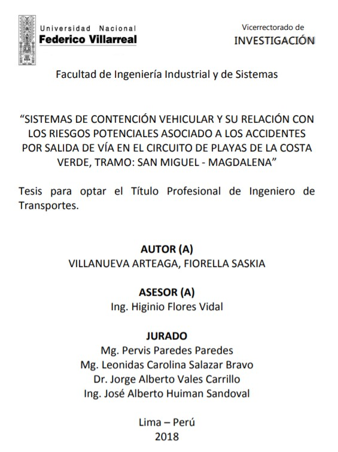

Control de las infracciones y formalización de los vehículos menores
motorizados en Ate 2017-2018
AUTOR: Cabezas Canales, Yovana
 Descripcion:
Descripcion:
La presente tesis denominado “Control de las infracciones y formalización de los vehículos menores motorizados en Ate 2017-2018”, tuvo como objetivo establecer la influencia de la formalización de vehículos menores a través del control de infracciones en Ate 2017-2018. Para el desarrollo del presente estudio se aplicó el método de tipo transversal y analítica, ya que se analizó las infracciones impuestas de tipo A, de tipo B y de tipo C, siendo 0, 13286 y 3296 respectivamente. Los resultados más importantes del presente estudio: La municipalidad distrital de Ate, no aplica las infracciones de tipo A que son dirigidos a las empresas formales; De las 47 infracciones de tipo B con mayor cantidad registrada en el sistema de fiscalización de transporte es de tipo B-9 con un total de 4496 infracciones.
Propuesta de mejora en base a la gestión de mantenimiento y orientados a la
disponibilidad de servicios de la flota de vehículos pesados de la empresa de transporte
pereda
AUTOR: Guzman Acevedo, Cely Jackeline
Descripcion:
El objetivo del proyecto de investigación ha sido el promover mediante factores que generaban los retrasos en el mantenimiento de los vehículos de la Empresa Transportes Pereda, una propuesta de mejora en base a la gestión de mantenimiento y orientadas a la disponibilidad de servicios de la flota de vehículos pesados, de esta forma se identificó y desarrolló diferentes procesos mediante la planificación en el área de mantenimiento con la finalidad de brindar un mejor servicio a sus clientes en el contexto operacional. Indudablemente la aplicación coherente de una metodología nos permitió cumplir con los objetivos definidos y sobretodo generar nuevos conocimientos acerca del tema, que es pertinente y relativamente, es un área que poco se estudia en el transporte como tal.
Implementacion del diseño tecnico a traves del manejo y transporte de
residuos en minera las bambas
AUTOR: Villa Perea, Victor Angel
Descripcion:
El presente Trabajo Monográfico tuvo como propósito generar los recursos móviles y estacionarios necesarios para cumplir con los servicios solicitados para el servicio de Transporte y Manejo Integral de Residuos Sólidos en Minera Las Bambas, el diseño técnico económico está orientado a la asignación de vehículos y equipos capaces de realizar los servicios de recojo, transporte interno, manejo de relleno sanitario , manejo interno de residuos y patio de acopio temporal de residuos, transporte y disposición final de residuos peligrosos y no peligrosos , transporte de agua para consumo humano hacia otras instalaciones, succión de agua residual y de trampas de grasa. Para dimensionar los números de vehículos que se asignaran construimos una metodología medido por tiempos, distancias y volumen, así como la capacidad de carga de los vehículos para estos servicios, este trabajo se llevó a cabo por la invitación de Minera Las Bambas a Gestión de Servicios Ambientales.
Estudio de la situación actual y propuesta de tránsito y transporte en la
provincia de Pomabamba departamento de Áncash
AUTOR: Rosales Corzo, Roberta Yovana
Descripcion:
La presente tesis denominado “Estudio de la Situacional Actual y Propuesta de Tránsito y Transporte en la Provincia de Pomabamaba Departamento de Ancash”, tuvo como objetivo determinar como la señalización y la infraestructura vial, influyen en mejorar las condiciones de tránsito y transporte en la Provincia de Pomabamba departamento de Ancash, año 2017. Para el desarrollo del estudio se utilizó el método de análisis de la información e interpretación de la información actual y la técnica de las encuestas, para conocer la percepción de los ciudadanos en cuanto al servicio del transporte, para lo cual se trabajó con una muestra de 300 ciudadanos entre las edades de 18 a 70 años. Siendo los resultados más importantes del estudio: que las mototaxis, combis que prestan el servicio de transporte público de pasajes no reúnen las condiciones básicas apropiadas, el 96% de vehículos son informales y la mayor parte de vehículos que prestan servicio informalmente son mototaxis, existiendo 15 empresas de mototaxi que presta servicio dentro del radio urbano, del cual 8 empresas son informales y 7 empresas formales.
Implementación del proceso de gestión de backlog para generar el aumento del
kpi disponibilidad en flota pesada camiones caterpillar 793d para Compañía Minera
Antapaccay.
AUTOR: Vallenas Nova, Jack Humberto
Descripcion:
El presente trabajo tiene como objetivo principal la implementación del proceso de gestión de backlogs para incrementar los valores del INDICADOR-KPI DISPONIBILIDAD ( AV% ) en flota pesada de camiones Caterpillar 793D, en Compañía Minera Antapaccay, ubicada en Espinar – Cusco – Perú. La metodología consiste en revisar los procesos de mantenimiento con el fin de identificar debilidades y desarrollar oportunidades de mejora que contribuyan directamente al buen desempeño de la flota pesada de camiones Caterpillar 793D. La implementación partió de la oportunidad de identificar tareas pendientes de atención las que, junto a las tareas preventivas, formarían la estrategia para la programación de mantenimientos, para esto tanto los procedimientos para recolección de información, así como la herramienta principal.

Sistemas de contención vehicular y su relación con los riesgos potenciales
asociado a los accidentes por salida de vía en el circuito de playas de la costa verde,
tramo: San Miguel - Magdalena
AUTOR: Villanueva Arteaga, Fiorella Saskia
Descripcion:
La presente tesis tiene por objetivo determinar la relación entre la instalación de un sistema de contención vehicular y el riesgo potencial asociado a los accidentes de tránsito por salida de vía en el Circuito de playas de la Costa Verde en el tramo: San Miguel – Magdalena, con la finalidad de disminuir el riesgo de fatalidad a la que se ven expuestos conductores y terceros que circulan por esta vía, así como conocer los aspectos que inciden en la colocación de un dispositivo de contención. Para tal fin, se llevó a cabo el análisis y evaluación de riesgos de los peligros potenciales identificados en el tramo mencionado, realizando una comparación entre las barreras de seguridad instaladas en la actualidad y las características de las barreras de acuerdo a los criterios establecidos en los manuales de diseño, normas internacionales y el ultimo Manual de Seguridad Vial publicado en julio del 2017 por el Ministerio de Transporte y Comunicaciones.

Drenaje en la carretera del tramo Santiago de Chuco-Quiruvilca
AUTOR: Gómez Prado, David
Descripcion:
El presente trabajo tiene como objetivo principal elaborar un diseño de la infraestructura de drenaje en la carretera Santiago de Chuco-Quiruvilca en la región de La Libertad, con la finalidad de contribuir al mejoramiento de los servicios del transporte y proteger las inversiones previendo las inundaciones que causan efectos adversos a la carretera, captando las aguas pluviales para que no lleguen a la carretera, a fin de prevenir el deterioro de la compactación, agrietamiento e inundaciones que afecten los parámetros de diseño.